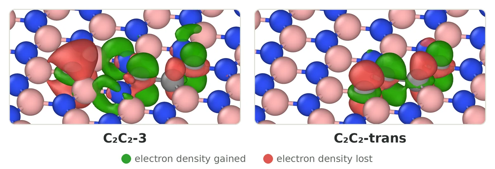
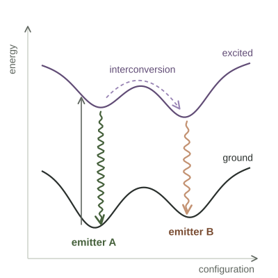

Excited-state pathways of carbon defects in hBN
A first-principles study of how four-carbon defects in monolayer hexagonal boron nitride (hBN) rearrange, and whether one single-photon emitter can be converted into another.
Current questionCan a single carbon–nitrogen exchange convert C₂C₂-3, a candidate for the yellow emitter (~575 nm), into C₂C₂-trans, a candidate for the blue B center (436 nm)? And is the barrier accessible thermally, or only under optical excitation?

More detailLess detail
BackgroundSingle-photon emitters, light sources that release one photon at a time, are building blocks for quantum communication and sensing. Point defects in hBN are among the brightest emitters that operate at room temperature, and carbon-related defects have been linked to several of them. Emitters in hBN are also observed to blink, shift in wavelength, or switch between emission states over time, possibly through structural changes, and the atomic origins of most of them are still debated.
ApproachC₂C₂-3 and C₂C₂-trans have the same composition and differ only by one C ↔ N exchange, yet they are candidates for emitters of very different color. I compute minimum-energy pathways between them to find the barrier for this exchange, first on the ground-state energy surface and then in excited states, to test whether light could drive the conversion.
MethodsGround-state and triplet pathways use density functional theory (PBE, Quantum ESPRESSO) with the nudged elastic band and string methods on large supercells, run on national supercomputing resources. Starting paths are built with image-dependent pair potentials (IDPP) and screened with single-point calculations. The next stage uses GW and the Bethe–Salpeter equation (BerkeleyGW) to describe excitons and, through excited-state forces, to relax structures and follow reaction paths on the excited-state surface.
Why it mattersA computed barrier would show whether this exchange can explain observed emitter changes, and whether it could be driven deliberately. More broadly, GW–BSE excited-state forces are among the most accurate first-principles tools for excited states but are rarely applied to defect reactions; this project tests them on a realistic case.

DFT · Nudged elastic band · String method · IDPP · GW · Bethe–Salpeter equation · Excited-state forces · Quantum ESPRESSO · BerkeleyGW · HPC
